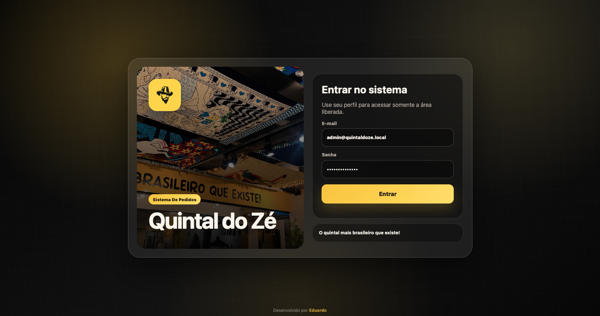
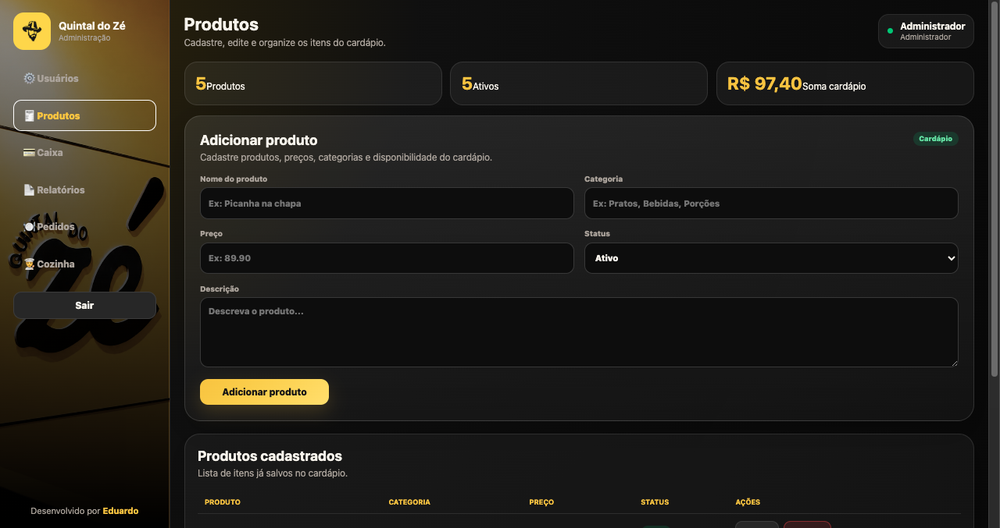
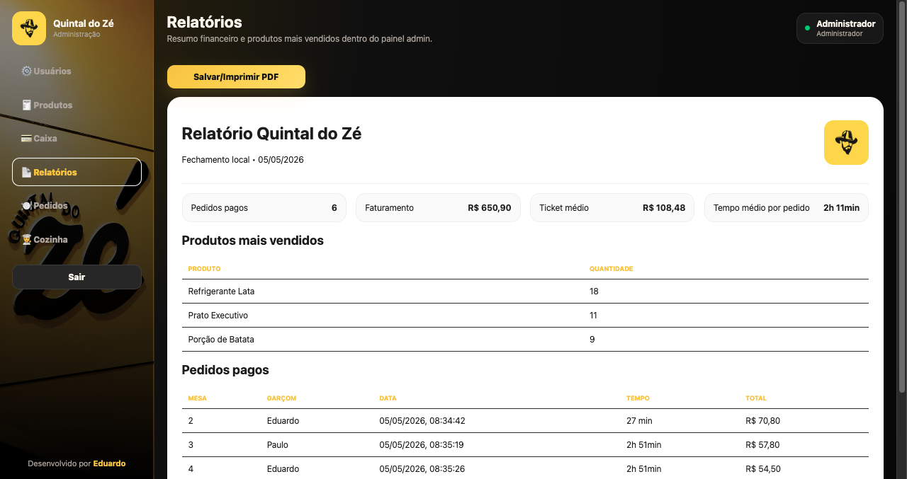
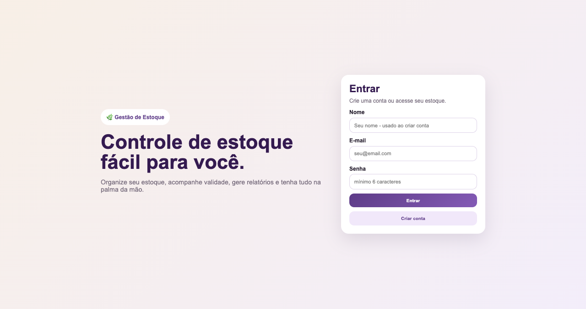

Portfólio de Sistemas
Sistemas sob medida para organizar processos, reduzir retrabalho e dar mais controle à sua operação.
Desenvolvo sistemas personalizados para empresas que precisam sair das planilhas, automatizar tarefas e acompanhar informações importantes em um painel simples, prático e feito para a rotina real do negócio.
Para quem é
Para empresas que ainda controlam processos no papel, planilhas ou WhatsApp.
O que posso desenvolver
Sistemas que podem ser criados sob medida
Além dos projetos já publicados, também posso desenvolver novas soluções de acordo com a sua necessidade:
Sistema de pedidos
Controle de estoque
Painel administrativo
Dashboard financeiro
Cadastro de clientes
Agenda ou reservas
Controle de produção
Relatórios personalizados
Área de login para equipe
Automações internas
Projetos em Destaque
Soluções prontas para desafios de negócio
Quintal do Zé | Pedidos Personalizados
Desafio
A empresa precisava controlar pedidos e etapas internas com mais organização.
Solução
Foi criado um sistema com login, painel administrativo, fluxo de pedidos, caixa, relatórios e tela da cozinha.
Recursos
Login, produtos, pedidos, relatórios, usuários e gestão operacional.
Resultado esperado
Mais controle, menos retrabalho e uma operação mais organizada.
Gestão de Estoque
Desafio
O controle de estoque estava distribuído entre anotações e planilhas, dificultando a visão de entradas, saídas e reposição.
Solução
Foi desenvolvido um sistema com acesso por usuário, painel de indicadores, movimentações de estoque, catálogo e relatórios.
Recursos
Cadastro de produtos, entradas e saídas, relatórios, perfil de usuário e painel administrativo.
Resultado esperado
Mais previsibilidade, menos perdas e decisões mais rápidas no dia a dia.
Como os sistemas aparecem na tela
Quintal do Zé | Pedidos Personalizados
Telas do fluxo completo: login, administração, caixa, relatórios, pedidos e painel da cozinha.







Gestão de Estoque
Telas do sistema: acesso, dashboard, movimentação de estoque, catálogo, relatórios e perfil.



Diferenciais
Por que desenvolver comigo
Como funciona o orçamento
Etapas do primeiro contato até a entrega
Você explica o processo
Entendo como sua empresa funciona hoje e quais são os principais gargalos.
Fluxo mapeado
Mapeio as etapas do seu trabalho para desenhar uma estrutura clara do sistema.
Solução ideal
Defino a proposta com telas, módulos e prioridades alinhadas ao seu objetivo.
Desenvolvimento e implantação
Construo o sistema, faço os ajustes finais e coloco em uso com suporte inicial.
Melhorias contínuas
Após o uso real, podemos evoluir funcionalidades de acordo com a rotina da equipe.
Perguntas frequentes
Dúvidas comuns antes de começar
O sistema funciona no celular?
Sim. Os sistemas são desenvolvidos para funcionar em celular, tablet e computador.
Precisa instalar alguma coisa?
Na maioria dos casos não. O acesso pode ser feito por navegador com login e senha.
O sistema pode ter login por usuário?
Sim. É possível criar perfis com permissões diferentes para cada área da equipe.
Dá para fazer relatórios?
Sim. Relatórios e indicadores podem ser personalizados conforme a necessidade da operação.
O sistema pode ser alterado depois?
Sim. O sistema pode evoluir com novas funcionalidades conforme o uso no dia a dia.
Quanto tempo leva para desenvolver?
Depende da complexidade. Após entender o escopo, envio um prazo estimado por etapas.
Quer um sistema assim para sua empresa?
Vamos conversar sobre o seu processo e transformar sua operação em um fluxo mais rápido e confiável.